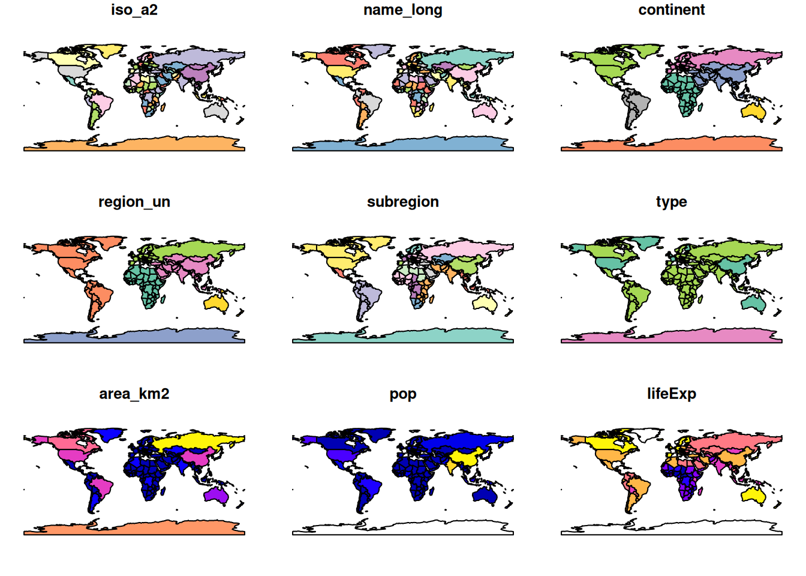
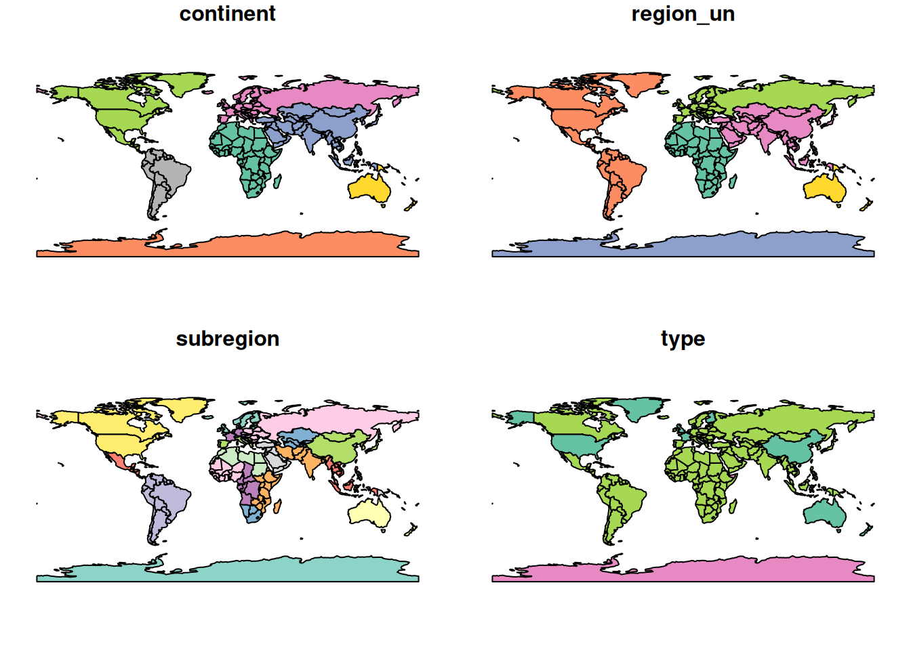
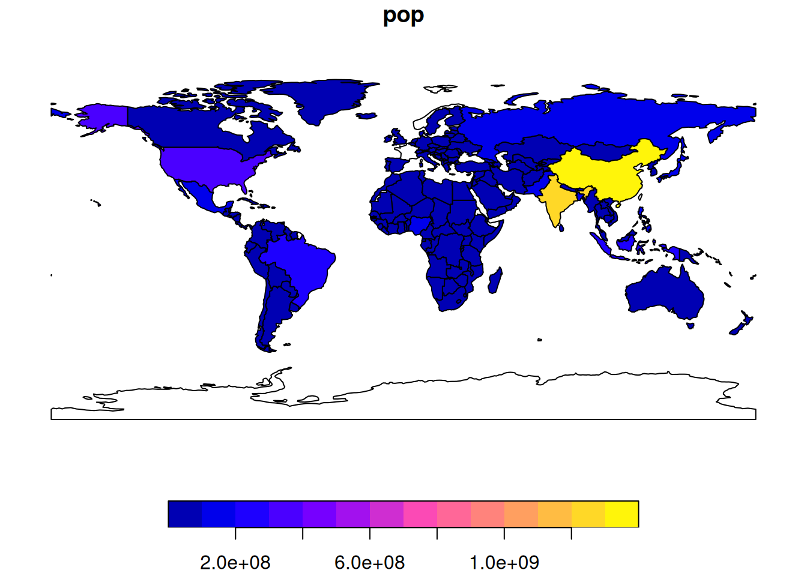
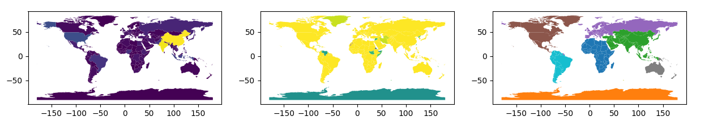
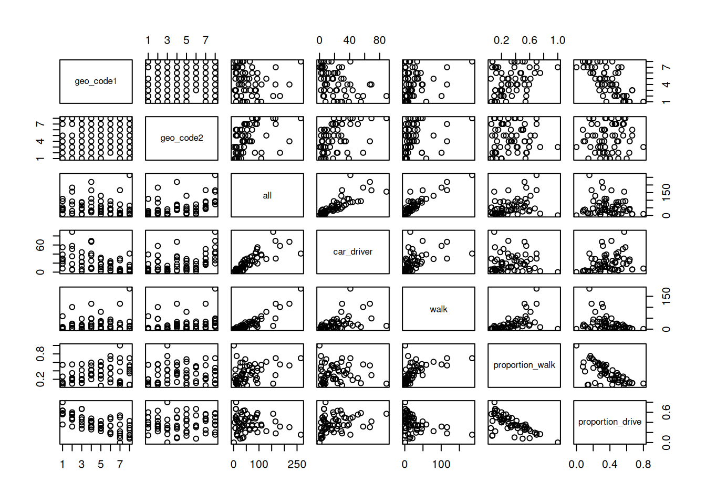
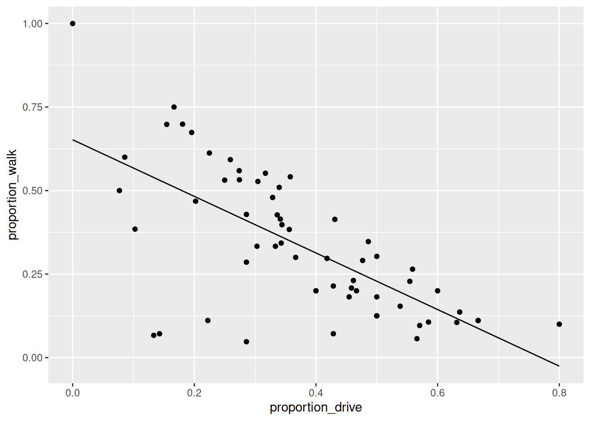
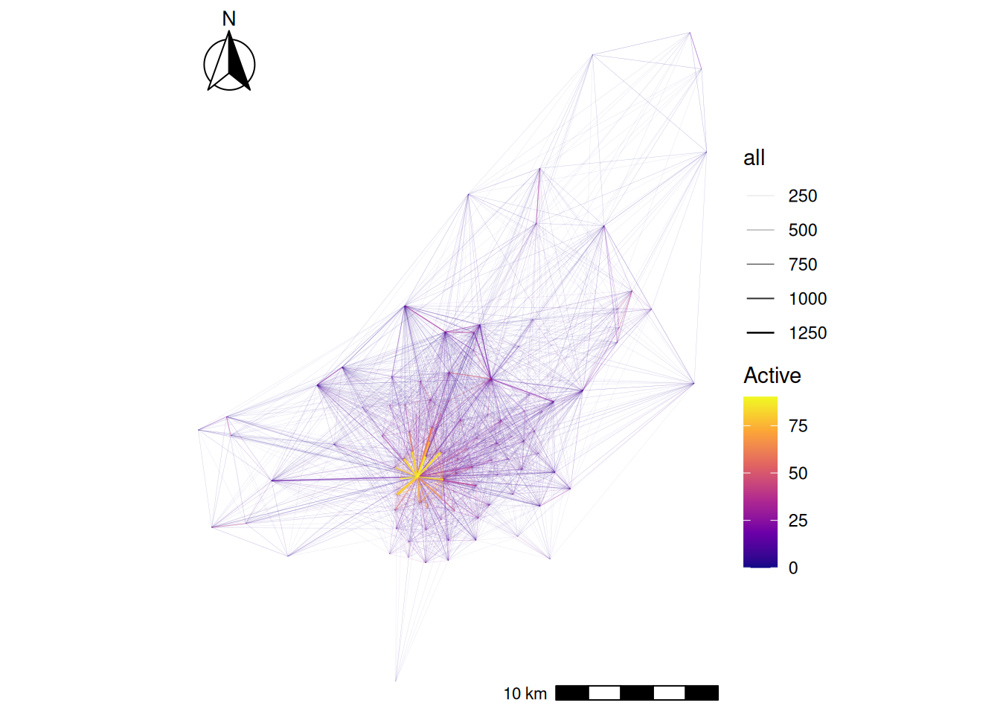
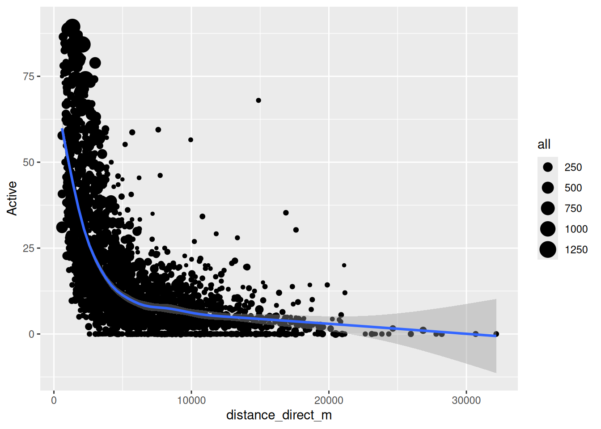

if (!require("pak")) install.packages("pak")
pak::pkg_install(c("sf", "tidyverse", "ggspatial", "tmap"))Origin-destination data analysis
1 Introduction
Origin-destination (OD) data forms the backbone of transportation planning, urban analytics, and spatial mobility research. This type of data captures movement patterns between geographic locations, revealing how people, goods, or services flow through space. Understanding OD data is crucial for making informed decisions such as infrastructure development and public transport planning.
In this session, we will how to use and analyse geographic and origin-destination data. It includes:
- A short lecture on geographic and origin-destination data (see slides)
- Hands-on analysis: Working with various geographic and OD datasets
Pre-requisites
You need to have a number of packages installed and loaded. Install the packages by typing in the following commands into RStudio (you do not need to add the comments after the # symbol)
If you need to install any of these packages use:
library(sf) # vector data package
library(tidyverse) # tidyverse packages
library(ggspatial) # ggspatial package
library(spData) # spatial data package# Install necessary packages (uncomment if not already installed)
# !pip install geopandas pandas matplotlib seaborn
import geopandas as gpd # vector data package
import pandas as pd # data manipulation
import matplotlib.pyplot as plt # plotting
import seaborn as sns # advanced plotting
# For spatial data, geopandas comes with sample datasets
# Alternatively, we can use the naturalearth datasets
import geopandas.datasets
Note
Note: this session assumes you have run the code in the prerequisites and Session 1 workbooks.
Ensure you have set-up a project folder and have that open in RStudio or VS Code, as described in Session 1.
- Check your packages are up-to-date with
update.packages()in R (or equivalent in Python) - Create appropriate folders for code, data and anything else (e.g. images)
- Create a script called
learning-OD.R(orlearning-OD.pyif you are using python), e.g. with the following command:
mkdir code
code code/learning-OD.R # for R
code code/learning-OD.py # for Python1.1 Basic sf operations
We will start with a simple map of the world. Load the world object from the spData package. Notice the use of :: to say that you want the world object from the spData package.
world = spData::worldworld = gpd.read_file(
'https://naturalearth.s3.amazonaws.com/110m_cultural/ne_110m_admin_0_countries.zip'
)Use some basic R functions to explore the world object. e.g. class(world), dim(world), head(world), summary(world). Also view the world object by clicking on it in the Environment panel.
sf objects can be plotted with plot().
plot(world)
world = gpd.read_file(
'https://naturalearth.s3.amazonaws.com/110m_cultural/ne_110m_admin_0_countries.zip'
)
print(type(world)) # Equivalent to class(world)
print(world.shape) # Equivalent to dim(world)
print(world.head()) # Equivalent to head(world)
print(world.describe()) # Equivalent to summary(world)
# Plotting the world GeoDataFrame
world.plot(figsize=(12, 8))
plt.title('World Map')
plt.show()Note that this makes a map of each column in the data frame. Try some other plotting options
world = spData::world
plot(world[3:6])
plot(world["pop"])
# Since world is a GeoDataFrame, we can select columns by position
# However, GeoPandas plots the geometry, so we need to specify columns
world = gpd.read_file('https://naturalearth.s3.amazonaws.com/110m_cultural/ne_110m_admin_0_countries.zip')
fig, axes = plt.subplots(1, 3, figsize=(15, 5))
world.plot(column='POP_EST', ax=axes[0])
world.plot(column='GDP_YEAR', ax=axes[1])
world.plot(column='CONTINENT', ax=axes[2])
plt.show()
1.2 Basic spatial operations
Load the nz and nz_height datasets from the spData package.
nz = spData::nz
nz_height = spData::nz_heightnz = gpd.read_file("https://github.com/Nowosad/spData_files/raw/refs/heads/main/data/nz.gpkg")
nz_height = gpd.read_file("https://github.com/Nowosad/spData_files/raw/refs/heads/main/data/nz_height.gpkg")We can use tidyverse functions like filter and select on sf objects in the same way you did in Practical 1.
canterbury = nz |> filter(Name == "Canterbury")
canterbury_height = nz_height[canterbury, ]canterbury = nz[nz['Name'] == 'Canterbury']In this case we filtered the nz object to only include places called Canterbury and then did and intersection to find objects in the nz_height object that are in Canterbury.
This syntax is not very clear. But is the equivalent to
canterbury_height = nz_height[canterbury, , op = st_intersects]canterbury_height = gpd.overlay(nz_height, canterbury, how='intersection')There are many different types of relationships you can use with op. Try ?st_intersects() to see more. For example this would give all the places not in Canterbury
nz_height[canterbury, , op = st_disjoint]canterbury_height = gpd.sjoin(nz_height, canterbury, op='intersects')
2 Getting started with OD data
In this section we will look at basic transport data in the R package stplanr.
Load the stplanr package as follows:
library(stplanr)The stplanr package contains some data that we can use to demonstrate principles in Data Science, illustrated in the Figure below. Source: Chapter 1 of R for Data Science [@wickham_data_2023] available online.

First we will load some sample data:
od_data = stplanr::od_data_sample
zone = stplanr::cents_sfimport pandas as pd
od_data = pd.read_csv('https://github.com/ropensci/stplanr/releases/download/v1.2.2/od_data_sample.csv')You can click on the data in the environment panel to view it or use head(od_data) Now we will rename one of the columns from foot to walk
od_data = od_data |>
rename(walk = foot)od_data.rename(columns={'foot': 'walk'}, inplace=True)Next we will made a new dataset od_data_walk by taking od_data and piping it (|>) to filter the data frame to only include rows where walk > 0. Then select a few of the columns and calculate two new columns proportion_walk and proportion_drive.
od_data_walk = od_data |>
filter(walk > 0) |>
select(geo_code1, geo_code2, all, car_driver, walk) |>
mutate(proportion_walk = walk / all, proportion_drive = car_driver / all)od_data_walk = od_data[od_data['walk'] > 0].copy()
od_data_walk = od_data_walk[['geo_code1', 'geo_code2', 'all', 'car_driver', 'walk']]
od_data_walk['proportion_walk'] = od_data_walk['walk'] / od_data_walk['all']
od_data_walk['proportion_drive'] = od_data_walk['car_driver'] / od_data_walk['all']We can use the generic plot function to view the relationships between variables
plot(od_data_walk)
sns.pairplot(od_data_walk)
plt.show()R has built in modelling functions such as lm lets make a simple model to predict the proportion of people who walk based on the proportion of people who drive.
model1 = lm(proportion_walk ~ proportion_drive, data = od_data_walk)
od_data_walk$proportion_walk_predicted = model1$fitted.values# pip install statsmodels
import statsmodels.formula.api as smf
model1 = smf.ols('proportion_walk ~ proportion_drive', data=od_data_walk).fit()
od_data_walk['proportion_walk_predicted'] = model1.fittedvaluesWe can use the ggplot2 package to graph our model predictions.
ggplot(od_data_walk) +
geom_point(aes(proportion_drive, proportion_walk)) +
geom_line(aes(proportion_drive, proportion_walk_predicted))
plt.figure(figsize=(8, 6))
plt.scatter(od_data_walk['proportion_drive'], od_data_walk['proportion_walk'], label='Observed')
plt.plot(od_data_walk['proportion_drive'], od_data_walk['proportion_walk_predicted'], color='red', label='Predicted')
plt.xlabel('Proportion Drive')
plt.ylabel('Proportion Walk')
plt.legend()
plt.show()Exercises
- What is the class of the data in
od_data? - Subset (filter) the data to only include OD pairs in which at least one person (
> 0) person walks (bonus: on what % of the OD pairs does at least 1 person walk?) - Calculate the percentage who cycle in each OD pair in which at least 1 person cycles
- Is there a positive relationship between walking and cycling in the data?
- Bonus: use the function
od::od_to_sf()to convert the OD dataset into geographic desire lines
Code for Exercises (click to reveal, but try to do them yourself first)
class(od_data)print("Class of od_data:", type(od_data))od_data_walk = od_data |>
filter(walk > 0)
nrow(od_data_walk) / nrow(od_data) * 100od_data_walk = od_data[od_data['walk'] > 0].copy()
percentage_walk = (len(od_data_walk) / len(od_data)) * 100
print(f"Percentage of OD pairs where at least one person walks: {percentage_walk}%")#|
od_data = od_data |>
filter(bicycle > 0) |>
mutate(perc_cycle = (bicycle / all) * 100)od_data_cycle = od_data[od_data['bicycle'] > 0].copy()
od_data_cycle['perc_cycle'] = (od_data_cycle['bicycle'] / od_data_cycle['all']) * 100od_data_new = od_data |>
filter(walk > 0, bicycle > 0) |>
select(bicycle, walk, all)
model = lm(walk ~ bicycle, weights = all, data = od_data_new)
od_data_new$walk_predicted = model$fitted.values
ggplot(od_data_new) +
geom_point(aes(bicycle, walk, size = all)) +
geom_line(aes(bicycle, walk_predicted))od_data_new = od_data[(od_data['walk'] > 0) & (od_data['bicycle'] > 0)].copy()
od_data_new = od_data_new[['bicycle', 'walk', 'all']]
# Weighted linear regression
import statsmodels.api as sm
weights = od_data_new['all']
X = sm.add_constant(od_data_new['bicycle'])
wls_model = sm.WLS(od_data_new['walk'], X, weights=weights)
results = wls_model.fit()
od_data_new['walk_predicted'] = results.fittedvalues
# Plotting the relationship
plt.figure(figsize=(8, 6))
plt.scatter(od_data_new['bicycle'], od_data_new['walk'], s=od_data_new['all']*0.1, label='Data')
plt.plot(od_data_new['bicycle'], od_data_new['walk_predicted'], color='red', label='Fitted Line')
plt.xlabel('Bicycle')
plt.ylabel('Walk')
plt.legend()
plt.show()desire_lines = stplanr::od2line(flow = od_data, zones = zone)
plot(desire_lines)
# save zone as gpkg
sf::st_write(zone, "zone.geojson")import pandas as pd
import geopandas as gpd
from shapely.geometry import LineString
od_data = pd.read_csv('https://github.com/ropensci/stplanr/releases/download/v1.2.2/od_data_sample.csv')
zones = gpd.read_file('https://github.com/ropensci/stplanr/releases/download/v1.2.2/zones.geojson')
# Ensure the CRS is set (replace 'epsg:4326' with your actual CRS if different)
if zones.crs is None:
zones.set_crs(epsg=4326, inplace=True)
# If zones are polygons, compute centroids
if zones.geom_type.isin(['Polygon', 'MultiPolygon']).any():
print("Creating centroids representing desire line start and end points.")
zones['geometry'] = zones.centroid
# Create a mapping from 'geo_cod' to 'geometry'
geo_cod_to_geometry = dict(zip(zones['geo_cod'], zones['geometry']))
# Map origin and destination geometries
od_data['geometry_o'] = od_data['geo_code1'].map(geo_cod_to_geometry)
od_data['geometry_d'] = od_data['geo_code2'].map(geo_cod_to_geometry)
# Check for any missing matches
missing_origins = od_data[od_data['geometry_o'].isnull()]
missing_destinations = od_data[od_data['geometry_d'].isnull()]
if not missing_origins.empty:
print(f"Missing origin geometries for {len(missing_origins)} records")
if not missing_destinations.empty:
print(f"Missing destination geometries for {len(missing_destinations)} records")
# Remove rows with missing geometries
od_data.dropna(subset=['geometry_o', 'geometry_d'], inplace=True)
# Create LineString geometries for desire lines
od_data['geometry'] = od_data.apply(
lambda row: LineString([row['geometry_o'], row['geometry_d']]), axis=1
)
# Create a GeoDataFrame for the desire lines
desire_lines = gpd.GeoDataFrame(od_data, geometry='geometry', crs=zones.crs)
# Plot the desire lines
desire_lines.plot()3 Processing origin-destination data in Bristol
This section is based on Chapter 13 of Geocomputation with R. You may read this chapter in full in your own time.
We need the stplanr package which provides many useful functions for transport analysis and tmap package which enables advanced mapping features.
We will start by loading two datasets from the Geocomputation with R book.:
library(stplanr)
library(tmap)
od = readr::read_csv("data/od.csv")
zones = sf::st_read("data/zones.geojson")Reading layer `zones' from data source
`/home/runner/work/dstp/dstp/data/zones.geojson' using driver `GeoJSON'
Simple feature collection with 102 features and 2 fields
Geometry type: MULTIPOLYGON
Dimension: XY
Bounding box: xmin: -2.845847 ymin: 51.28248 xmax: -2.252388 ymax: 51.73982
Geodetic CRS: WGS 84If you do not have these files on your computer, you can read them directly from the web:
od = readr::read_csv("https://github.com/tdscience/dstp/raw/refs/heads/main/data/od.csv")
zones = sf::st_read("https://github.com/tdscience/dstp/raw/refs/heads/main/data/zones.geojson")od_data = gpd.read_file('https://github.com/ropensci/stplanr/releases/download/v1.2.2/bristol_od.geojson')
zones = gpd.read_file('https://github.com/ropensci/stplanr/releases/download/v1.2.2/bristol_zones.geojson')
if zones.crs is None:
zones.set_crs(epsg=4326, inplace=True)
# If zones are polygons, compute centroids
if zones.geom_type.isin(['Polygon', 'MultiPolygon']).any():
print("Creating centroids representing desire line start and end points.")
zones['geometry'] = zones.centroid
# Create a mapping from 'geo_cod' to 'geometry'
geo_cod_to_geometry = dict(zip(zones['geo_code'], zones['geometry']))
# Map origin and destination geometries
od_data['geometry_o'] = od_data['geo_code1'].map(geo_cod_to_geometry)
od_data['geometry_d'] = od_data['geo_code2'].map(geo_cod_to_geometry)
# Check for any missing matches
missing_origins = od_data[od_data['geometry_o'].isnull()]
missing_destinations = od_data[od_data['geometry_d'].isnull()]
if not missing_origins.empty:
print(f"Missing origin geometries for {len(missing_origins)} records")
if not missing_destinations.empty:
print(f"Missing destination geometries for {len(missing_destinations)} records")
# Remove rows with missing geometries
od_data.dropna(subset=['geometry_o', 'geometry_d'], inplace=True)
# Create LineString geometries for desire lines
od_data['geometry'] = od_data.apply(
lambda row: LineString([row['geometry_o'], row['geometry_d']]), axis=1
)
# Create a GeoDataFrame for the desire lines
desire_lines = gpd.GeoDataFrame(od_data, geometry='geometry', crs=zones.crs)
# Plot the desire lines
desire_lines.plot()Explore these datasets using the functions you have already learnt (e.g. head,nrow).
You will notice that the od datasets has shared id values with the zones dataset. We can use these to make desire lines between each zone. But first we must filter out trips that start and end in the same zone.
od_inter = filter(od, o != d)
desire_lines = od2line(od_inter, zones)# Filter OD data where origin and destination are different
od_inter = od[od['o'] != od['d']].copy()
od_inter = od_inter.merge(zones[['geo_code', 'geometry']], left_on='o', right_on='geo_code', how='left')
od_inter.rename(columns={'geometry': 'origin_geometry'}, inplace=True)
od_inter = od_inter.merge(zones[['geo_code', 'geometry']], left_on='d', right_on='geo_code', how='left')
od_inter.rename(columns={'geometry': 'destination_geometry'}, inplace=True)Let’s calculate the percentage of trips that are made by active travel
desire_lines$Active = (desire_lines$bicycle + desire_lines$foot) /
desire_lines$all * 100desire_lines['Active'] = (desire_lines['bicycle'] + desire_lines['foot']) / desire_lines['all'] * 100Now use tmap to make a plot showing the number of trips and the percentage of people using active travel. Alternatively, you may use the ggplot2 for visualisation.
desire_lines = desire_lines[order(desire_lines$Active), ]
tm_shape(desire_lines) + # Define the data frame used to make the map
tm_lines(
col = "Active", # We want to map lines, the colour (col) is based on the "Active" column
palette = "plasma", # Select a colour palette
alpha = 0.7, # Make lines slightly transparent
lwd = "all"
) + # The line width (lwd) is based on the "all" column
tm_layout(legend.outside = TRUE) + # Move the ledgend outside the map
tm_scale_bar() # Add a scale bar to the map
desire_lines = desire_lines[order(desire_lines$Active), ]
ggplot() +
geom_sf(
data = desire_lines, # Define the data frame used to make the map
aes(
colour = Active, # We want to map lines, the colour is based on the "Active" column
alpha = all, # Make lines slightly transparent and based on the "all" column
linewidth = all # The line width is based on the "all" column
)
) +
scale_colour_viridis_c(option = "C") + # Select a colour palette
scale_linewidth_binned(range = c(0.03, 0.6), guide = "legend") + # Set max and min ranges for line width
scale_alpha(range = c(0.1, 1), guide = "legend") + # Set max and min ranges for transparency
annotation_scale(location = "br", width_hint = 0.3) + # Scale bar (bottom left)
annotation_north_arrow(
location = "tl", which_north = "true",
style = north_arrow_fancy_orienteering()
) + # North arrow (top left)
theme_void()desire_lines = desire_lines.sort_values('Active')
# Normalize line widths for plotting
max_trips = desire_lines['all'].max()
desire_lines['linewidth'] = (desire_lines['all'] / max_trips) * 5
# Plotting desire lines with active travel percentage
fig, ax = plt.subplots(figsize=(12, 10))
desire_lines.plot(
ax=ax,
column='Active',
cmap='plasma',
linewidth=desire_lines['linewidth'],
alpha=0.7,
legend=True
)
plt.title('Desire Lines with Active Travel Percentage')
# Add basemap (optional)
# ctx.add_basemap(ax, crs=desire_lines.crs.to_string())
plt.show()Now that we have geometry attached to our data we can calculate other variables of interest. For example let’s calculate the distacne travelled and see if it relates to the percentage of people who use active travel.
desire_lines$distance_direct_m = as.numeric(st_length(desire_lines))desire_lines['distance_direct_m'] = desire_lines.geometry.lengthNote the use of as.numeric by default st_length and many other functions return a special type of result with unit. Here we force the results back into the basic R numerical value. But be careful! The units you get back depend on the coordinate reference system, so check your data before you assume what values mean.
ggplot(desire_lines) +
geom_point(aes(x = distance_direct_m, y = Active, size = all)) +
geom_smooth(aes(x = distance_direct_m, y = Active))
plt.figure(figsize=(8, 6))
sns.scatterplot(data=desire_lines, x='distance_direct_m', y='Active', size='all', legend=False)
sns.regplot(data=desire_lines, x='distance_direct_m', y='Active', scatter=False, color='red')
plt.xlabel('Distance (meters)')
plt.ylabel('Active Travel Percentage')
plt.title('Active Travel vs Distance')
plt.show()The blue line is a smoothed average of the data. It shows a common concept in transport research, the distance decay curve. In this case it shows that the longer the journey the less likely people are to use active travel. But this concept applies to all kinds of travel decisions. For example you are more likely to travel to a nearby coffee shop than a far away coffee shop. Different types of trip have different curves, but most people always have a bias for shorter trips.
4 Summary
Through this session, we have:
- Understood the fundamental spatial data operations using Simple Features
- Transformed raw origin–destination data into meaningful transportation insights
- Effectively visualised complex OD patterns (with additional OD visualisation content in Session 5)
This session provides essential building blocks, but true mastery comes with practice and continued learning. You may apply these methods to transportation and OD data from your own city or region, where the local context will always reveal unique patterns and challenges.
Reuse
Copyright
© 2025 Robin Lovelace